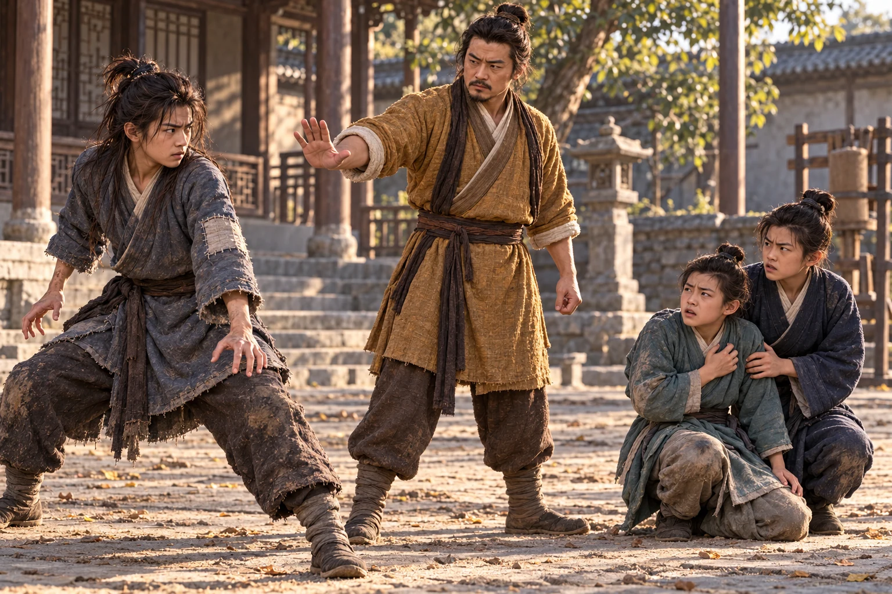
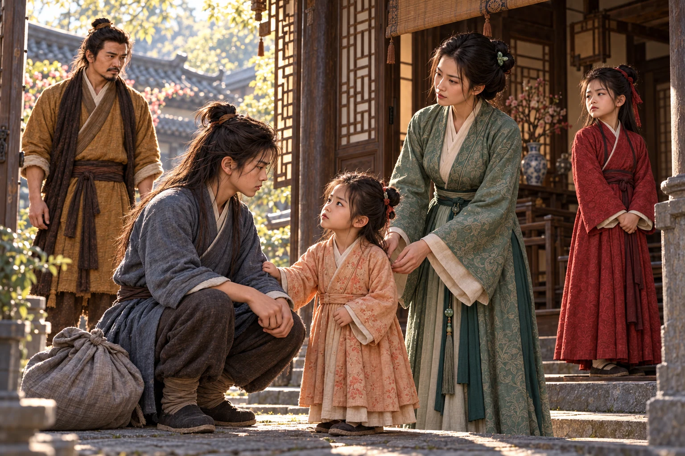

berhenti di ambang pintu ketika menyebutnya anggota keluarga.
Di hadapannya berdiri seorang perempuan berjubah hijau giok. Wajahnya elok dan tenang; tatapannya bergerak dari alis Dani ke buntalan yang digenggamnya, lalu kembali ke wajahnya. Dua anak perempuan berada di sisinya. Yang lebih besar mengenakan baju merah tua dan memandang tambalan pada lengan Dani tanpa berusaha menyembunyikannya.
“Rong'er, ini Dani, putra dan ,” kata Guo Jing. “Ibunya sudah meninggal. Mulai hari ini, ia tinggal bersama kita.”
menerima kabar itu tanpa segera menjawab. Jarinya merapikan rambut anak kecil yang bersandar di pinggangnya. Ketika kembali menatap Dani, senyumnya sudah terpasang, tipis dan sopan. “Kau tentu lelah. Pamanmu sudah menceritakan sebagian perjalanan kalian. Panggil aku Bibi Guo.”
“Terima kasih, Bibi Guo. Aku sudah merepotkan Paman sepanjang jalan,” ucap Dani.
Ia memberi hormat dengan kedua tangan, sedikit kaku karena dada yang masih memar. Guo Jing menyentuh bahunya dan mempersilakannya masuk.
“Fu'er, Xiang'er, ini kakak kalian. Dani berusia empat belas tahun,” kata Guo Jing.
Anak berbaju merah itu merapatkan bibir. Ia berusia dua belas tahun dan terbiasa menjadi yang paling didengarkan di antara anak-anak rumah itu. , yang baru lima tahun, mendongak dari sisi ibunya.
“Kak Dani tidur di sini?” tanya Guo Xiang.
“Paman Guo mengizinkan kakak tinggal di sini,” jawab Dani.
“Apakah kamar Kak Dani dekat dengan kamarku?” tanya Guo Xiang.
“Nanti Ibu tunjukkan. Biarkan kakakmu duduk dahulu,” jawab Huang Rong.
melangkah ke samping, tetapi Dani masih berdiri. Dari halaman belakang muncul dua anak lelaki dengan ikat pinggang latihan. Yang lebih tinggi lebih dahulu memberi hormat kepada Guo Jing; adiknya segera mengikuti. berusia dua belas, sebelas. Keduanya berhenti di dekat Guo Fu setelah diperkenalkan.
“Kau belum meletakkan barangmu,” ujar Guo Fu.
“Aku belum tahu boleh ditaruh di mana,” balas .
“Letakkan di bangku dekat pintu. Kursi yang itu bukan tempat menaruh buntalan,” perintah Guo Fu.
Ia menunjuk bangku dekat pintu. Dani memilih meletakkan buntalannya di bawah kursi yang dipersilakan . Guo Fu menatapnya lebih lama. Tidak ada yang mengatakan apa-apa, tetapi Wu Xiuwen sudah memperhatikan wajah gadis itu sebelum duduk.
menyuruh anak-anak memberi ruang, lalu menanyakan kejadian di rumah keluarga Lu. Dani menceritakan yang dilihatnya. Ia tidak menambahkan keberanian yang tidak dimilikinya: buntalannya gagal mengalihkan , pukulan membuatnya terjatuh, dan tetap dibawa pergi.
“Ayahku datang sesudah perempuan itu pergi?” tanya Huang Rong.
“Benar, Bibi Guo. datang ketika masih tertindih kayu, lalu menyelamatkannya,” jawab Dani.
“Sesudah itu, apakah ayahku menyuruhmu pergi sendiri meskipun engkau terluka?” tanya Huang Rong.
Dani mengangkat wajah. Guo Jing memandang istrinya, tetapi membiarkannya menyelesaikan pertanyaan.
“Beliau mengajakku ikut, Bibi. Aku sendiri yang belum mau meninggalkan halaman itu,” ujar Dani.
“Rupanya ada sesuatu yang membuatmu sanggup menahan sakit. Apa yang tertinggal di sana?” tanya Huang Rong.
“ peninggalan Ibu tercecer, Bibi. Kalau bukan aku yang mencarinya, siapa lagi yang tahu bahwa benda-benda itu milik Ibu?” jawab Dani.
Huang Rong menurunkan pandangan pada buntalan di bawah kursi. Ia tidak menanyakan isinya. Setelah beberapa saat, ia bangkit untuk menyiapkan obat memar. Dani mengira percakapan telah selesai, sampai perempuan itu berhenti di dekat suaminya. “Anak ini terbiasa memutuskan sendiri, Kakanda Jing. Ia bahkan berani menolak ajakan Ayah.”
“Terlalu lama ia tidak mempunyai orang untuk dimintai pertolongan. Mulai sekarang, kita yang harus membimbingnya.” Guo Jing mengatakan itu kepada istrinya, tetapi Dani mendengarnya dengan jelas. Ia melepaskan pegangan pada ujung bajunya. Malam itu ia memperoleh makanan, pakaian bersih, dan kamar yang pintunya dapat ditutup; untuk pertama kalinya sejak ibunya meninggal, ia tidak perlu menentukan tempat tidur untuk malam berikutnya.
Selama pekan pertama, obat dan istirahat mengurangi nyeri di dada Dani. Guo Jing melatih kedua saudara Wu, sementara Huang Rong mengajarinya membaca dan menulis; lewat beberapa halaman saja, ia mengetahui Dani cepat menangkap penjelasan dan lekas bosan pada pengulangan. Menjelang akhir pekan kedua, Dani sudah kembali mengenakan baju biru lamanya untuk bergerak bebas dan lebih sering memandang halaman latihan daripada huruf di depannya.
“, bacakan kalimat terakhir yang Bibi tunjukkan,” kata Huang Rong.
Dani membacanya tanpa menunduk. Huang Rong menutup buku dengan satu jari masih terselip di antara halaman.
“Hafal bunyinya belum berarti memahami isinya,” ujar Huang Rong.
“Kalau Bibi menanyakan artinya, akan kucoba menjelaskan,” balas Dani.
“Baiklah, Bibi ingin mendengar apa yang kaupahami dari kalimat itu,” kata .
Ia menjelaskan sebisanya. Tidak semua katanya tepat, tetapi ia memahami maksud bacaan tentang kewajiban membalas pertolongan. Huang Rong membetulkan satu bagian. Dani mendengarkan sampai suara hentakan kaki dari luar kembali menarik perhatiannya.
“Bibi Guo, kapan aku boleh berlatih bersama ?” tanya Dani.
“Mengapa terburu-buru? Lukamu baru membaik,” jawab Huang Rong.
“Dadaku sudah tidak sakit ketika bergerak, Bibi,” jawab Dani.
“Apakah karena lukamu tidak terasa, engkau yakin sudah siap menerima pelajaran apa pun?” tanya Huang Rong.
“Kalau belum mencoba, bagaimana aku tahu, Bibi? Bila ada yang belum sanggup kulakukan, bukankah Paman dapat mengajariku?” jawab Dani.
Huang Rong menatapnya. Kali ini tidak ada senyum. Dani menegakkan punggung, merasa telah mengatakan sesuatu yang seharusnya tidak dikatakan, tetapi tidak tahu bagian mana yang salah.
“Ilmu silat memberi seseorang kemampuan melukai,” kata Huang Rong. “Bibi perlu mengetahui watakmu sebelum menyerahkan sesuatu yang tidak bisa ditarik kembali.”
“Paman Guo bilang aku sudah menjadi bagian dari keluarga ini,” balas Dani.
“Justru karena engkau tinggal dalam tanggungan kami, Bibi harus berhati-hati memilih pelajaranmu,” jawab Huang Rong.
membuka buku, tetapi pikirannya tetap di halaman latihan. Kedua saudara Wu diajari menangkis; dirinya terus diajari menjadi anak baik. Apakah Bibi mengira aku akan memakai ilmu untuk mencelakakan orang? Ia belum sanggup menanyakan itu. Huang Rong memang menahan kepercayaan: kemiripan Dani dengan membangkitkan kewaspadaan lama, dan kecerdikannya membuat perempuan itu ingin menguji wataknya sebelum memberinya kekuatan.
“Aku pun bisa belajar tanpa mencari orang untuk dipukul, Bibi,” kata Dani.
“Kalau begitu, perlihatkan dahulu bahwa engkau dapat menahan keinginanmu sendiri. Selesaikan bacaan ini,” ujar Huang Rong.
Ucapan itu tenang. Justru ketenangan itulah yang membuat Dani menunduk dengan rahang mengeras. Ia menyelesaikan bacaannya, memberi hormat, lalu keluar setelah dipersilakan. memperhatikan ia tidak lagi melirik halaman; anak itu sengaja berjalan menghadap arah yang berlawanan.
Sore itu menemukannya di tepi tempat latihan. Dani menonton dari kejauhan dengan tangan terlipat. Kedua saudara Wu sedang mengulang gerakan yang diajarkan Guo Jing pagi tadi.
“Kalau hendak belajar, berdirilah di sebelahku. Kuda-kuda semudah itu bisa kuajarkan kepadamu,” kata Guo Fu.
Dani menoleh dengan senyum miring. “Baru sehari aku di sini, kau sudah ingin menjadi guruku? Cepat sekali naik pangkatnya.”
“Aku bahkan belum mulai mengajarmu. Mengapa kau sudah menolak?” kata Guo Fu.
“Aku belum minta diajari, kau sudah mengatur tempatku berdiri. Kalau benar menjadi muridmu, jangan-jangan bernapas pun harus menunggu izin.”
Pipi Guo Fu memerah. Ia mengira ajakannya akan disambut dengan senang hati, sebagaimana kedua saudara Wu selalu menyambutnya. Dani bahkan tidak membalikkan badan sepenuhnya. Penolakan itu melukai harga dirinya; semakin ia ingin diperhatikan, semakin keras nada yang dipakainya. menghentikan latihan.
“Adik Fu sedang membantumu. Kau bisa menjawab lebih baik,” kata Dunru.
“Baru satu calon guru, pembelanya sudah dua.” Dani melirik mereka bergantian. “Kalau kelak aku salah melangkah, yang memarahiku siapa dahulu?”
“Barangkali ia takut kita melihat betapa sedikit yang diketahuinya,” tanya .
Dani akhirnya menoleh. Adik keluarga Wu itu berusaha tersenyum, tetapi tangannya masih mengepal di sisi tubuh. Ia menunggu Guo Fu bereaksi. Gadis itu tidak tertawa; matanya tertuju pada Dani, menuntut jawaban yang lebih pantas.
“Kau setiap hari melihat kami latihan,” desak Guo Fu. “Sekarang ditawari malah begitu. Memangnya ilmu Ayah kurang bagus untukmu?”
“Jangan bawa-bawa . Aku tidak pernah merendahkan ilmu beliau,” jawab .
“Kalau begitu, apa alasanmu menolak bantuanku?” desak Guo Fu.
Dani bisa saja mengaku malu diajari anak yang lebih muda, terlebih setelah percakapannya dengan . Ia justru menyepak kerikil dan tersenyum lebih lebar. “Aku takut. Kalian berdua saja begitu patuh, apalagi aku yang baru datang.” Gurauan itu melindungi harga dirinya, sekaligus menusuk harga diri orang lain.
Wu Dunru melangkah menutup jalan ketika ia hendak pergi. “Minta maaf dulu kepada Adik Fu.”
“Kalau pelajarannya sudah selesai, beri jalan. Atau berdiri di sini juga bagian dari ilmu keluarga Wu?”
“Kakakku bicara baik-baik.” Xiuwen meraih lengan Dani. Dani mengibaskan tangannya; bahu mereka bertabrakan. Ia masih bisa berhenti saat itu, membiarkan mereka merasa menang dan kembali ke kamarnya. Namun berada tepat di depannya, dengan tatapan seolah seluruh kejadian ini adalah kesalahannya karena tidak menuruti perintah pertama.
“Kau memang sengaja membuat orang kesal!” seru Guo Fu.
“Jangan pegang aku!” seru Dani.
Ia mendorong Xiuwen menjauh. langsung menangkap pergelangan tangannya dan memutarnya ke bawah. Dani mengenali gerakan yang dilihatnya pagi tadi, tetapi mengetahui bentuknya tidak membuat ia sanggup melepaskan diri. Lututnya membentur tanah.
“Mintalah maaf kepada Adik Fu. Sesudah itu baru kulepaskan tanganmu,” desak Dunru.
Dani menyikut ke belakang. Pegangan Dunru longgar sesaat; ia menyentakkan tangannya bebas dan mundur. Xiuwen, yang merasa dipermalukan di depan Guo Fu, maju dengan pukulan lurus. Dani berhasil menghindari yang pertama. Yang kedua mengenai bahunya.
Kakinya tersandung batas batu. Ia jatuh berlutut lagi, telapak menahan tubuh. Saat mengangkat muka, ia melihat mendekat dan Dunru bergerak dari samping. Guo Fu mengatakan sesuatu, tetapi suaranya tenggelam oleh darah yang berdesir di telinga Dani.
Ia tidak hendak kalah di tanah sekali lagi.
Tubuhnya merendah dengan sendirinya. Gerakan yang pernah dicontohkan kembali dalam potongan yang tidak lengkap: bahu, pinggang, tenaga yang sesaat berkumpul. Dani tidak tahu berapa kuat yang dapat dikeluarkannya. Ia hanya melihat Xiuwen datang terlalu dekat.
Telapaknya menghantam dada anak itu.
Xiuwen terlempar ke belakang dan jatuh di atas batu halaman. Bunyi benturannya memutus semua suara. Ia berusaha menarik napas, tetapi yang keluar hanya dengusan pendek. Dunru berlutut di sisinya, memanggil nama adiknya dengan suara yang mendadak pecah.
masih berjongkok. Lengannya bergetar, dan sisa tenaga yang tadi dirasakannya telah lenyap. Xiuwen memegangi dadanya. Ia sadar, matanya terbuka, tetapi napasnya tidak kunjung lega.
“Cukup. Semuanya mundur.” telah berada di antara mereka. Tangannya terangkat ketika Dani bergerak hendak mendekat; bukan ancaman pukulan, melainkan perintah yang tidak memberi tempat untuk bantahan. Dani berhenti. Guo Jing kemudian berlutut di sisi Xiuwen dan memeriksa nadinya.

menyusul dari serambi. Ia menopang punggung Xiuwen setelah Guo Jing mengubah posisi tubuh anak itu. Beberapa saat kemudian terdengar tarikan napas yang kasar, disusul batuk. Dunru berpegangan pada bahu adiknya seolah takut tubuh itu akan kembali terlepas.
“Ayah, Dani yang memukulnya!” seru .
“Ayah melihat akibatnya. Ayah akan mendengar bagaimana ini dimulai,” kata Guo Jing.
Guo Fu menutup mulut. Dari arah pintu terdengar ketukan tongkat . Guo Jing menoleh kepada istrinya; Huang Rong mengangguk setelah memeriksa pernapasan Xiuwen sekali lagi.
“Ia perlu dirawat. , bantu Bibi membawanya ke dalam. Fu'er, ikut,” ujar Huang Rong.
Ketiganya bergerak. Ketika melintasi Dani, Dunru menatapnya dengan mata merah. Dani ingin mengatakan sesuatu, tetapi tidak menemukan kata yang tidak terdengar seperti pembelaan diri. Ia berdiri perlahan, menahan tangan yang masih gemetar di balik tubuhnya.
“Dani. Dari siapa engkau belajar ?” tanya Guo Jing.
Tongkat Ke Zhen'e berhenti.
“Kungfu Hama?” tanya Ke Zhen'e.
Dani memandang pintu tempat dibawa masuk. Sekarang ia mengerti bahwa yang dilihat Guo Jing bukan hanya seorang anak membalas pukulan. Paman itu telah mengenali sesuatu yang Dani sendiri belum mengerti. “Aku mempelajarinya dari ayah angkatku, Paman Guo.”
“Orang yang berpisah denganmu di hutan itu ?” tanya Guo Jing.
Dani mengangguk.
“Racun Barat! Jing'er, anak ini membawa ilmunya ke rumahmu!” bentak Ke Zhen'e.
“Tetua boleh marah kepadaku. Tetapi jangan hina orang yang telah menolongku,” balas .
“Bocah, apa kau mengenal perbuatan orang yang sedang kaubela itu?” bentak Ke Zhen'e.
“Guru, izinkan murid memeriksa apa yang telah dipelajarinya dahulu.” tetap menghadap gurunya sampai ujung tongkat kembali menyentuh tanah. Kemudian ia berpaling kepada Dani. Suaranya tidak meninggi, tetapi Dani tidak berani mengalihkan pandangan.
“Apa yang diajarkannya?” tanya Guo Jing.
“Hanya beberapa gerakan dasar, Paman. Aku tinggal bersamanya beberapa hari saja,” jawab Dani.
“Mengapa Paman tidak kauberitahu ketika kita membicarakan ayah angkatmu?” tanya Guo Jing.
Dani menoleh sekilas kepada . Ia tidak perlu mengatakan jawabannya agar Guo Jing memahami. Wajah lelaki itu mengeras, bukan karena tersinggung, melainkan karena persoalannya sekarang lebih besar daripada pertengkaran anak-anak.
“Engkau boleh menyayangi orang yang menolongmu,” ujar Guo Jing. “Tetapi Paman harus tahu ilmu apa yang telah masuk ke tubuhmu. Terutama bila engkau belum sanggup mengendalikannya.”
“Paman Guo, mereka berdua menyerangku. Aku hendak melepaskan diri,” balas Dani.
“Paman akan memeriksa perbuatan mereka juga. Tetapi jawablah dahulu: apakah engkau mengetahui kekuatan pukulan yang kaulepaskan tadi?” kata Guo Jing.
Dani memandang telapaknya. Ia menggeleng.
“Kalau pukulan itu lebih kuat, bisa kehilangan nyawanya,” ujar Guo Jing.
Kemarahannya belum hilang. Ia masih ingat dipaksa berlutut dan merasa berhak membalas. Tetapi suara Xiuwen yang gagal menarik napas membuat pembelaan itu tersangkut di tenggorokan. Dani hanya ingin mereka berhenti memukulnya. Ia tidak pernah membayangkan bahwa satu dorongan tangannya dapat membuat orang lain takut akan mati.
“Aku hanya ingin membuatnya mundur, Paman. Aku tidak tahu dia akan terluka seperti itu,” kata Dani.
Guo Jing mendekat dan meletakkan tangan pada bahunya yang terkena pukulan. Ia memeriksa sebentar, lalu menurunkannya. “Paman percaya. Karena itulah engkau harus belajar berhenti sebelum kemarahan memilihkan pukulanmu.”
Sesudah pernapasan Xiuwen stabil, Guo Jing mengumpulkan mereka di ruang tengah. Xiuwen tetap duduk bersandar; tidak menjauh darinya. berdiri di sisi pintu, di tempat yang sama ketika pertama kali dipersilakan masuk.
mengatakan bahwa Dani lebih dahulu mendorong adiknya. Dani langsung membantah bahwa Xiuwen memegangnya. Keduanya mulai berbicara bersamaan, sampai mengangkat tangan.
“Satu per satu. Dunru, sebelum adikmu didorong, apakah engkau menghalangi jalan Dani?” tanya Guo Jing.
“Saya menyuruhnya meminta maaf, Guru,” jawab Dunru.
“Aku menanyakan apakah engkau menghalangi jalannya. Jawablah perbuatanmu dahulu, baru alasanmu,” kata Guo Jing.
“Benar, Guru. Murid menghalangi jalannya,” jawab Dunru.
Guo Jing beralih kepada putrinya. segera menegakkan badan.
“Ayah, aku hanya menawarkan untuk mengajarinya. Dia malah membalas dengan kasar,” kata Guo Fu.
“Sesudah ia menolak, apakah kalian membiarkannya pergi?” tanya Guo Jing.
Guo Fu menatap ujung lengan bajunya. Ia tidak ingin membela Dani. Ia juga tidak berani mengatakan bahwa jalan itu terbuka ketika ayahnya telah mendengar pengakuan Dunru. “Kami tidak membiarkannya pergi, Ayah. Tetapi ia juga tidak patut memukul Xiuwen sekeras itu.”
“Benar. Kesalahannya akan dibicarakan. Itu tidak menghapus kesalahan kalian,” tegas Guo Jing.
Ia memerintahkan kedua saudara Wu mengakui bahwa mereka memaksa Dani, lalu melarang latihan tanding tanpa pengawasan sampai mereka memahami batasnya. Kepada Guo Fu, ia menyuruhnya meminta maaf karena terus mendesak setelah ditolak. Gadis itu mengangkat wajah dengan mata berair karena malu.
“Ayah selalu—” kata Guo Fu.
“Fu'er. Ayah tidak sedang memilih siapa yang paling Ayah sayangi,” potong Guo Jing.
Guo Fu terdiam. Permintaan maafnya keluar pendek dan kaku, ditujukan ke arah dada , bukan matanya. Dunru menyusul setelah menatap adiknya. Tidak ada yang tampak puas, tetapi Guo Jing tidak membiarkan perkara berakhir pada pihak yang paling keras membantah.
Lalu tiba giliran Dani.
“Engkau berhak melepaskan diri. Engkau tidak berhak mengabaikan akibat pukulanmu. Datangi ,” kata .
Dani berjalan mendekat. Xiuwen menarik kakinya menjauh, gerakan kecil yang lebih menyakitkan daripada tatapan marah . Dani berhenti sebelum terlalu dekat. “Xiuwen, aku tidak tahu pukulan itu akan melukaimu separah ini. Aku meminta maaf kepadamu.”
“Aku belum ingin kau mendekat. Beri aku waktu dahulu,” pinta Xiuwen.
Dani mengangguk. Ia tidak menambahkan bahwa mereka yang memulai. Kalimat itu sudah didengar semua orang, dan tetap tidak membuat Xiuwen bisa berdiri tanpa ditopang.
Setelah anak-anak lain dibawa keluar, meminta Dani tetap tinggal. Ia mengembalikan obat ke meja, lalu menoleh kepada suaminya.
“Aku sudah mengatakan ia cepat menangkap pelajaran,” kata Huang Rong. “Sekarang kita tahu apa yang dapat terjadi sebelum kita mengenal seluruh bekalnya.”
“Tetapi sejak awal Bibi memang tidak mau mengajariku ilmu silat,” balas Dani.
“Bibi duduk bersamamu mengajar setiap hari, Dani. Apakah semua pelajaran itu tidak berarti bagimu?” jawab Huang Rong.
“Pelajaran Bibi tentu berguna. Tetapi aku hanya belajar huruf, sedangkan Dunru dan Xiuwen diajari melindungi diri. Mengapa aku belum juga dipercaya?” jawab Dani.
Huang Rong tidak menyangkal. Guo Jing memandang istrinya cukup lama sampai perempuan itu menjawab hal yang tidak diucapkannya. “Aku bersedia merawatnya. Untuk mempercayakan ilmu yang lebih berbahaya, aku perlu waktu. Kejadian hari ini tidak membuatku lebih tenang.”
“Dan bila ia merasa selalu dicurigai, ia akan semakin menyembunyikan dirinya,” balas Guo Jing.
“Kakanda Jing, aku dapat menerima tanggung jawab yang kauminta. Tetapi rasa percaya tidak tumbuh hanya karena diperintahkan,” kata Huang Rong.
Ruang itu sunyi. menatap keduanya bergantian. Orang-orang dewasa tersebut tidak saling membentak, tetapi setiap jawaban menutup suatu jalan yang tadi masih dibukakan Guo Jing untuknya.
“Benar. Tetapi tanggung jawabku kepadanya tidak menunggu sampai semua orang merasa tenang,” kata Guo Jing.
meminta Huang Rong memeriksa kembali. Perempuan itu menatap Dani sebelum pergi; ia mencemaskan ilmu yang keluar tanpa kendali dan anak-anak yang dapat terluka olehnya. Dani menangkap tatapan itu sebagai bukti bahwa dirinya tidak dikehendaki. Rasa takut dibuang membuatnya sulit mendengar alasan lain.
Guo Jing menarik sebuah kursi, lalu menyuruh Dani duduk menghadapnya. “Paman akan membawamu ke . Di sana engkau dapat memperoleh dasar latihan yang tertib. Paman akan mengantarmu sendiri dan meminta mereka membimbingmu.”
Dani tidak duduk. “Apakah dan Xiuwen tetap tinggal di sini, Paman?”
“Mereka tetap tinggal dan belajar di bawah pengawasan Paman,” jawab Guo Jing.
“Mereka juga berbuat salah. Mengapa hanya aku yang harus pergi?” kata Dani.
“Mereka sudah ditegur dan akan tetap Paman awasi. Engkau pun menjadi tanggung jawab Paman. Ilmu yang kaubawa memerlukan dasar yang tertib; pertengkaran di rumah ini justru menghalangimu belajar dengan tenang,” jawab Guo Jing.
“Kalau Paman memang tak menginginkanku di sini, katakan saja. Aku sudah terbiasa pergi,” kata Dani.
Guo Jing tidak segera menjawab. Ia membiarkan Dani menyelesaikan napasnya yang memburu, lalu berdiri. Bagi Dani, tubuh lelaki itu mendadak terasa sangat besar, tetapi tangan yang terulur kepadanya tetap terbuka. “Dengarkan Paman baik-baik. Engkau tidak kehilangan keluarga karena berbuat salah. Paman tidak menyerahkanmu untuk membuang tanggung jawab. Paman akan memastikan engkau mempunyai guru.”
“Tetapi tetap tidak percaya kepadaku, Paman,” balas Dani.
“Paman tahu itu menyakitkan. Namun tadi engkau takut ketika melihat Xiuwen terluka. Jagalah hati yang masih dapat takut melukai orang lain itu. Jangan sampai kelak engkau hanya pandai mencari pembenaran,” kata Guo Jing.
Dani menyeka matanya dengan punggung tangan, kasar, seolah ada debu yang masuk. Ia ingin berkata bahwa ia tidak takut. Kebohongan itu tidak keluar. “Aku masih ingin belajar, Paman Guo. Aku tak mau terus-menerus seperti tadi.”
“Kalau begitu, berangkatlah bersama Paman,” ujar Guo Jing.
Ia akhirnya mengangguk. Keputusan sudah diambil, tetapi untuk kali ini Guo Jing menunggu sampai anak itu mampu mengucapkannya sendiri.
“Kalau Paman yang mengantarkan, aku mau ikut,” kata .
Dua hari kemudian, ketika sudah dapat berjalan perlahan dan memar bahu Dani mulai surut, mereka bersiap berangkat. Huang Rong menambahkan pakaian serta obat ke dalam barang bawaan; Dani melipat sendiri baju biru lamanya dan menyimpannya bersama ibunya. Perbekalan itu diterimanya dengan ucapan terima kasih yang terlalu resmi untuk seorang anak kepada bibinya.
berdiri di dekat serambi. Ketika Dani lewat, ia menggeser tubuh memberi jalan. Tidak ada perintah kali ini. Ia seperti hendak mengatakan sesuatu, tetapi Dunru dan Xiuwen berada di belakangnya, sehingga dagunya kembali terangkat. Dani terus berjalan.
Di ambang pintu, memegang ujung bajunya.
“Kak Dani, besok pulang?” tanya Guo Xiang.
Dani berjongkok agar wajah mereka sejajar. Ia belum tahu seberapa jauh , apalagi kapan seseorang akan mengizinkannya pulang. “Kakak pergi belajar, Xiang'er. Besok belum bisa pulang.”
“Apakah Kak Dani akan pergi lama?” tanya Guo Xiang.
“Kakak belum tahu kapan pelajarannya selesai,” jawab Dani.
Huang Rong datang menjemput putri kecilnya. Kali ini Dani memandang wajah bibinya sebelum memberi hormat. Perempuan itu membalas dengan anggukan, lalu mengingatkan agar ia memakai obat sesuai pesan . Ia tetap dirawat sampai langkah terakhirnya keluar dari rumah, dan justru karena itu ia tidak tahu harus menaruh rasa marahnya di mana.

Guo Jing menunggu di luar. Ia sudah berpamitan kepada ; kini ia memeriksa ikatan barang Dani dan mengembalikannya tanpa mengambil alih beban itu.
“Paman sungguh akan menemaniku sampai bertemu guru di sana?” tanya Dani.
“Paman akan mengantarkanmu dan berbicara langsung dengan gurumu. Engkau tidak perlu masuk seorang diri,” jawab Guo Jing.
Dani mengangguk, lalu melangkah di sisinya. Kali ini ia membawa alamat tujuan. Ia belum berani menganggapnya tempat untuk pulang.